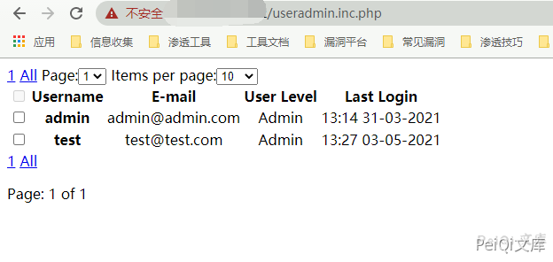

rConfig useradmin.inc.php 信息泄露漏洞¶
漏洞描述¶
rConfig useradmin.inc.php 存在信息泄露漏洞，通过访问文件获取用户邮箱信息和登录名
漏洞影响¶
rConfig
网络测绘¶
app="rConfig"
漏洞复现¶
出现漏洞的文件
<?php
/* Includes */
require_once("../classes/db2.class.php");
include_once('../classes/paginator.class.php');
/* Instantiate DB Class */
$db2 = new db2();
// get timezone for later
$db2->query("SELECT timeZone FROM settings");
$result = $db2->resultsetCols();
$timeZone = $result[0];
date_default_timezone_set($timeZone);
/* Get Row count from users where NOT deleted */
$db2->query('SELECT COUNT(*) AS total FROM users WHERE status = 1');
$row = $db2->resultsetCols();
$result["total"] = $row[0];
/* Instantiate Paginator Class */
$pages = new Paginator;
$pages->items_total = $result['total'];
$pages->mid_range = 7; // Number of pages to display. Must be odd and > 3
$pages->paginate();
echo $pages->display_pages();
echo "<span class=\"\">" . $pages->display_jump_menu() . $pages->display_items_per_page() . "</span>";
/* GET all nodes records from DB */
$db2->query("SELECT id, username, userlevel, email, timestamp FROM users WHERE status = 1 $pages->limit");
$resultSelect = $db2->resultset();
// push rows to $itesm array
$items = array();
foreach ($resultSelect as $row) {
array_push($items, $row);
}
/* Create Multidimensional array for use later */
$result["rows"] = $items;
$i = 0; # row counter to enable alternate row coloring
?>
<table id="userAddTbl" class="tableSimple">
<thead>
<th rowspan="2"><input type="checkbox" disabled="disabled"/></th>
<th rowspan="2">Username</th>
<th rowspan="2">E-mail</th>
<th rowspan="2">User Level</th>
<th rowspan="2">Last Login</th>
</thead>
<tbody>
<?php
foreach ($result['rows'] as $rows):
$id = $rows['id'];
/* This bit just updates the class='row' bit with an alternating 1 OR 0 for alternative row coloring */
echo '<tr class="row' . ($i++ % 2) . '">';
?>
<td align="center"><input type="checkbox" name="tablecheckbox" id="<?php echo $id; ?>"/></td>
<td align="center"><strong><?php echo $rows['username'] ?></strong></td>
<td align="center"><?php echo $rows['email'] ?></td>
<td align="center">
<?php
// quick check if userlevel =9 user is admin else, user is a User
if ($rows['userlevel'] == 9) {
$userlevel = "Admin";
} else {
$userlevel = "User";
}
echo $userlevel;
?></td>
<td align="center">
<?php
// quick convert unix TimeStamp to normal times
$lastLogin = date('H:i d-m-Y', $rows['timestamp']);
echo $lastLogin;
?>
</td>
</tr>
<?php endforeach; ?>
</tbody>
</table>
<?php
echo $pages->display_pages();
echo "<div class=\"spacer\"></div>";
echo "<p class=\"paginate\">Page: $pages->current_page of $pages->num_pages</p>\n";
文件没有设定权限，任何人可以访问泄露信息
漏洞验证的Url为
/useradmin.inc.php

泄露用户信息